Lektion 1.2 — Teil 1: Web & HTML
Grundlagen des Web: HTML, HTTP, URL
Lernziele
- Die Begriffe HTML, HTTP und URL definieren und voneinander abgrenzen
- Eine URL in Scheme, Host, Path und Query-String zerlegen
- Host, Hostname, Domain, TLD und FQDN unterscheiden
- Die Aufgabenteilung von HTML, CSS und JavaScript erklären
- Wissen, wo JavaScript heute überall läuft (Web, Mobile, Desktop, Server)
- Die Standardisierungsorganisationen W3C und WHATWG und die wichtigsten Nachschlagewerke kennen
1 — HTML: Hypertext Markup Language
Hypertext Markup Language (HTML) ist eine textbasierte Auszeichnungssprache
zur Strukturierung elektronischer Dokumente wie Text mit Hyperlinks (…).
Quelle: de.wikipedia.org/wiki/Hypertext_Markup_Language
Das Schlüsselwort ist Hypertext: Dokumente sind nicht linear wie ein Buch, sondern über Hyperlinks miteinander verknüpft. Von jedem Dokument kann man zu beliebigen anderen springen.
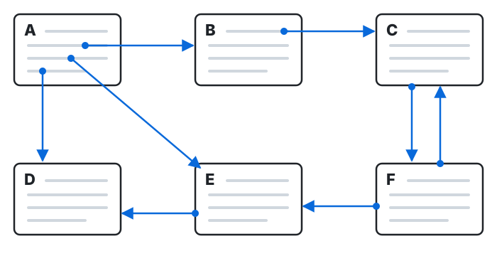
HTML beschreibt was ein Inhalt ist (Überschrift, Absatz, Link …), nicht wie er aussieht. Der Browser liest den HTML-Quelltext und stellt ihn dar. In den Entwicklertools des Browsers (Taste F12) sieht man, welches HTML-Element zu welchem Teil der Seite gehört:
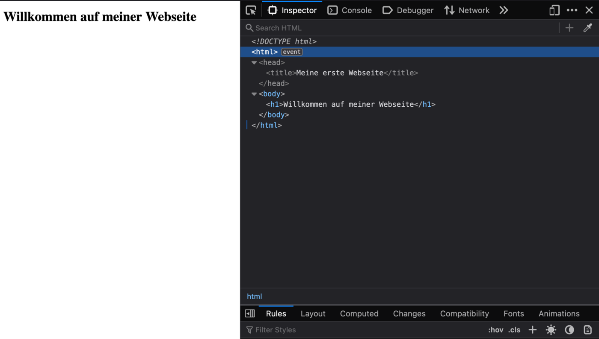
2 — HTTP: Hypertext Transfer Protocol
Das Hypertext Transfer Protocol (HTTP) ist ein (…)
Protokoll zur Übertragung (…), um Webseiten
(Hypertext-Dokumente) aus dem World Wide Web (WWW) in einen Webbrowser zu laden.
Quelle: de.wikipedia.org/wiki/Hypertext_Transfer_Protocol
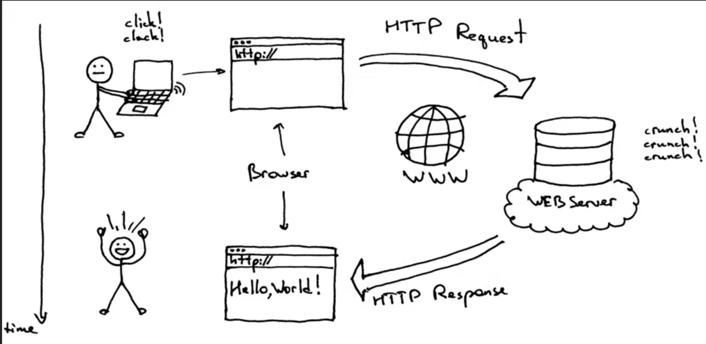
Der Ablauf besteht immer aus zwei Teilen:
- Request (Anfrage): Der Browser fragt eine Ressource an, z. B.
GET /index.html. - Response (Antwort): Der Webserver schickt die Ressource zurück – z. B. das HTML-Dokument „Hello World!“.
GET /index.html HTTP/1.1
Host: www.orf.at
HTTP/1.1 200 OK
Content-Type: text/html
<!DOCTYPE html>
<html> ... </html>3 — URL: Uniform Resource Locator
Eine URL („Uniform Resource Locator“) ist die Webadresse einer bestimmten Ressource im Internet – also von Webseiten, Mediendaten, Dokumenten usw.
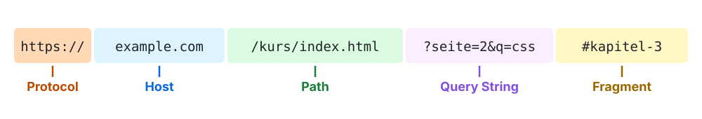
Am Beispiel https://www.orf.at/stories/123/?query=beispiel:
| Teil | Wert | Bedeutung |
|---|---|---|
| Scheme / Protocol | https | Das Protokoll für die Kommunikation (hier: sicheres HTTP). |
| Host | www.orf.at | Der Server, von dem die Ressource abgerufen wird (hier: die Website des ORF). |
| Path | /stories/123/ | Der konkrete Ort der Ressource auf dem Server. |
| Query-String | ?query=beispiel | Zusätzliche Parameter für die Anfrage, die an den Server übermittelt werden. Hier wird ein Suchbegriff („beispiel“) übergeben. |
| Fragment | #article3 | Sprungmarke innerhalb der Seite (wird nicht an den Server geschickt). |
4 — Exkurs: Host vs. Hostname
Host
Im Kontext einer URL bezeichnet Host die Kombination aus Domain, optional der Subdomain (Hostname) und der Portnummer.
Der Host gibt an, mit welchem Server im Internet der Browser eine Verbindung herstellen soll, um eine Webseite abzurufen.
Hostname
Der Hostname ist der Teil der URL, der den konkreten Server identifiziert, mit dem sich der Browser verbinden soll.
Er ist ein Teil des Hosts, der zusätzlich die Domain beinhaltet.
| URL | Host | Hostname |
|---|---|---|
https://www.orf.at/stories/123 | www.orf.at:443 (Port optional) | www |
https://api.orf.at/stories/123 | api.orf.at:443 | api |
Ports sind wie „Türnummern“ eines Servers. HTTPS verwendet standardmäßig Port 443, HTTP Port 80. Weil das der Standard ist, lässt man den Port in der Adresszeile normalerweise weg.
5 — Exkurs: Fully Qualified Domain Name (FQDN)
Der Fully Qualified Domain Name (FQDN) ist eine vollständige und eindeutige Referenz auf einen einzelnen Host oder Server im Internet.
Er beinhaltet den Hostnamen, den Domainnamen und die Top-Level-Domain (TLD). Zusammen bilden sie einen vollständigen Pfad durch die DNS-Hierarchie zu einem bestimmten Netzwerkhost.
Beispiel: https://www.orf.at/stories/123 | |
|---|---|
| Hostname | www |
| Domain | orf |
| TLD | at |
| FQDN | www.orf.at |
6 — Exkurs: Beispiel orf.at
Zum Abschluss alle Begriffe am Beispiel https://www.orf.at/:
| Scheme | https |
| Host | www.orf.at (vollständig: www.orf.at:443) |
| Hostname | www |
| Domain | orf |
| TLD | at |
| Path | / |
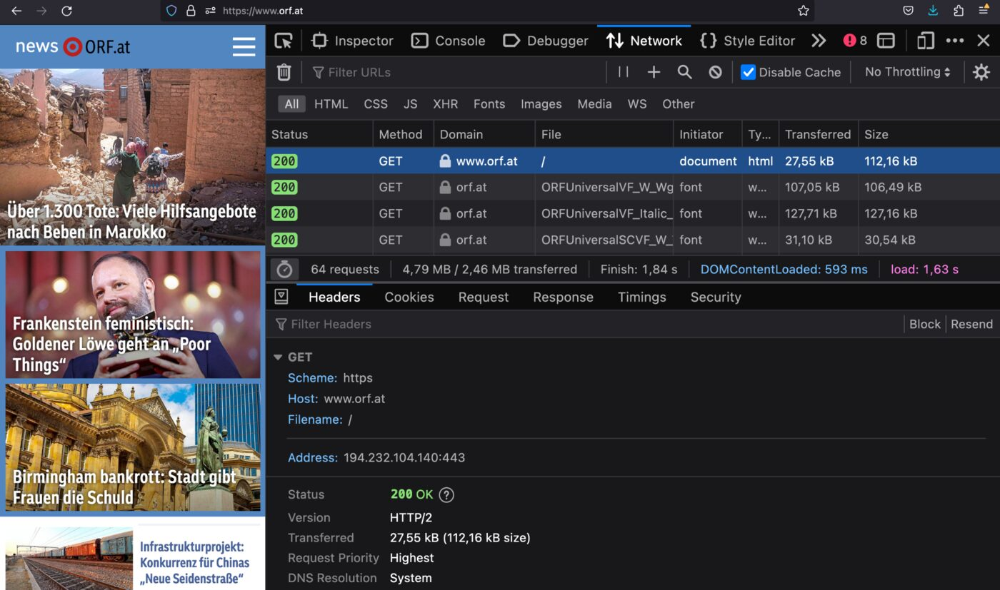
7 — HTML, CSS und JavaScript
Jede Webseite besteht aus drei Technologien mit klar getrennten Aufgaben:
| Technologie | Aufgabe | Vergleich |
|---|---|---|
| HTML | for structure – Struktur und Inhalt | das Skelett |
| CSS | for design and layout – Aussehen und Anordnung | die Kleidung |
| JavaScript | for interaction – Verhalten und Interaktion | die Muskeln |
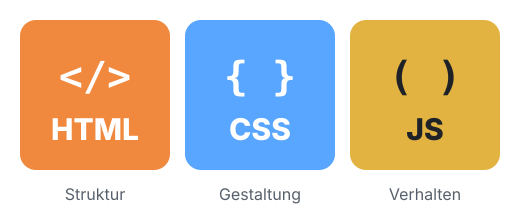
What is the latest?
Die aktuellen Versionen der drei Technologien:
- HTML 5.2 (heute als „Living Standard“ laufend weiterentwickelt)
- CSS 3 (heute in einzelne Module aufgeteilt, die unabhängig voneinander wachsen)
- JavaScript ES2024
Browser Market Share 2023
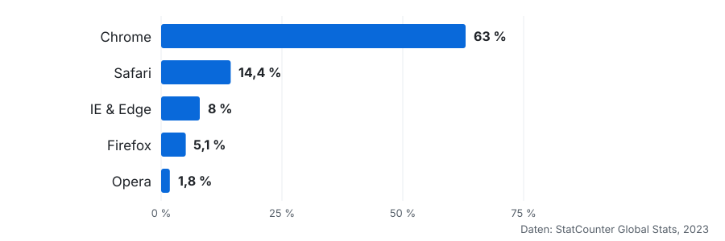
Nicht jeder Browser unterstützt jedes neue Feature gleichzeitig. Mit caniuse.com prüfst du, ob ein HTML-/CSS-/JS-Feature in den relevanten Browsern funktioniert.
8 — JavaScript Everywhere
Mit HTML, CSS und JavaScript baut man längst nicht mehr nur Webseiten. Dieselben Technologien laufen heute auf fast jeder Plattform:
Ionic Framework (Native Apps with JavaScript)
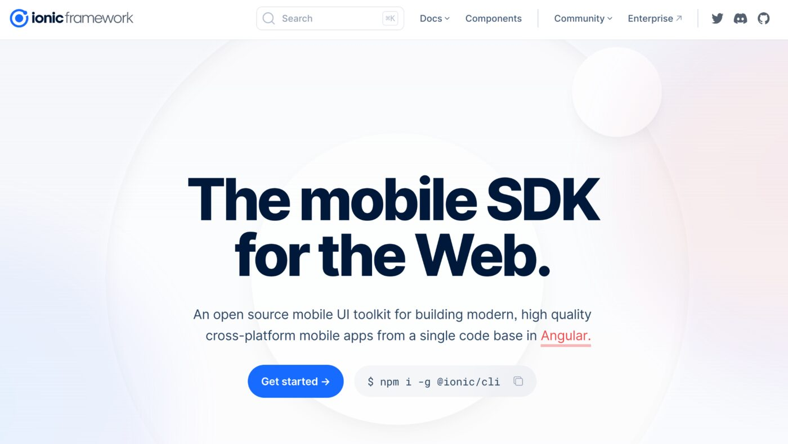
Electron Framework (Desktop Apps with JavaScript)
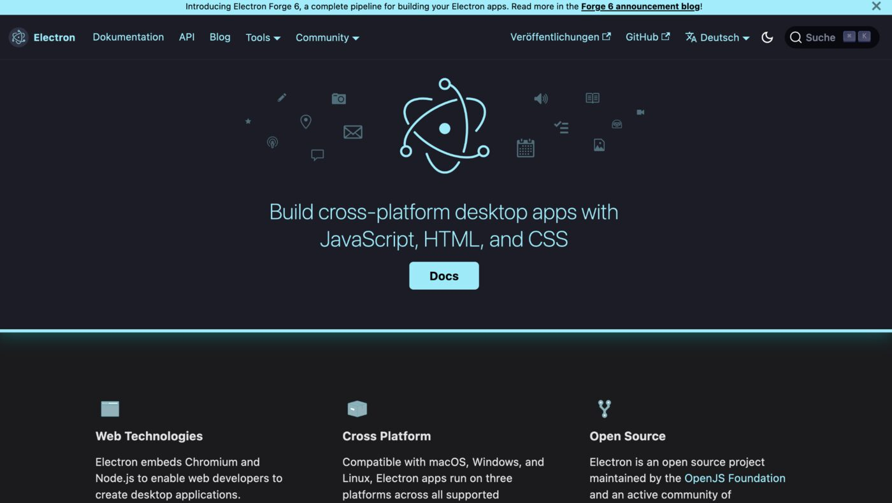
Node.js (JavaScript on the Server)
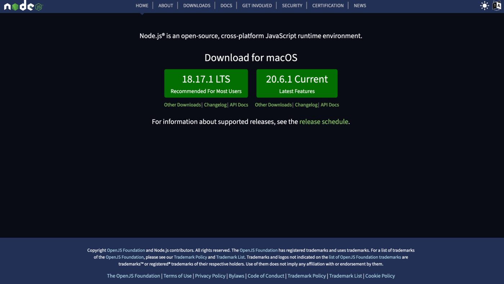
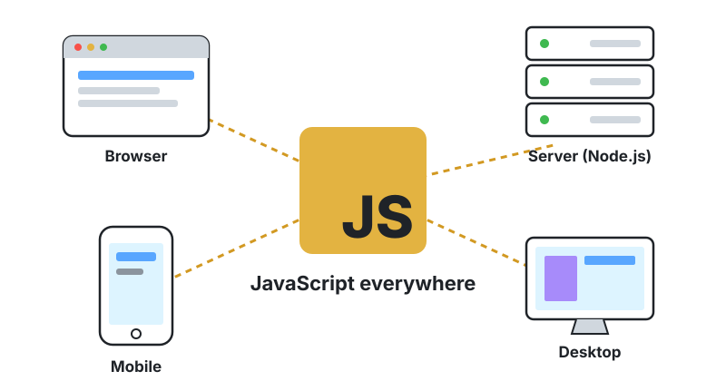
9 — Referenzen, Editoren & Lernspiele
Referenzen
- MDN – developer.mozilla.org/de/
- CAN I USE – caniuse.com
- W3Schools – w3schools.com
CSS References
- CSS Tricks – css-tricks.com
Editoren (installiert)
IntelliJ, Visual Studio Code, jeder beliebige Texteditor
Editoren (online)
CodePen, JSFiddle, StackBlitz
CSS Learning Games
- CSS Flexbox – flexboxfroggy.com/#de
- CSS Grid – cssgridgarden.com/#de
10 — Wer macht die Standards? W3C und WHATWG
W3C – World Wide Web Consortium
| Gründung | 1994 von Tim Berners-Lee, dem Erfinder des World Wide Web. |
| Organisation | Eine internationale Gemeinschaft, in der Mitgliedsorganisationen, ein Vollzeit-Stab und die Öffentlichkeit gemeinsam Webstandards entwickeln. |
| Standards | Entwickelt eine Vielzahl von Standards für das World Wide Web, darunter HTML, CSS, XML und viele andere. |
| Dokumentation | Die Spezifikationen durchlaufen verschiedene Stadien, bevor sie als Empfehlungen (Recommendations) veröffentlicht werden. |
WHATWG – Web Hypertext Application Technology Working Group
| Gründung | 2004 von Mitarbeitern von Apple, Mozilla und Opera – als Reaktion auf den Eindruck, dass das W3C die Entwicklung der für Webanwendungen nötigen Technologien nicht ausreichend vorantrieb. |
| Organisation | Eine lose organisierte, offene Gemeinschaft von Einzelpersonen und Organisationen, die sich auf die Verbesserung der Webtechnologien konzentriert. |
| Standards | Fokussiert sich vor allem auf die Entwicklung von HTML und verwandten Webtechnologien. |
| Dokumentation | Die Spezifikationen gelten als „lebende Standards“ (Living Standards): Sie werden laufend aktualisiert, statt in festen Versionen veröffentlicht zu werden. |
HTML5-Spezifikation
Die HTML5-Spezifikation der WHATWG ist ein „Living Standard“. Das bedeutet, dass sie ständig aktualisiert wird, um aktuelle Technologien und Best Practices widerzuspiegeln. Das fördert eine moderne und effiziente Webentwicklung. Wichtige Teile der HTML5-Spezifikation sind:
- HTML-Tags
- DOM (Document Object Model)
- APIs (Schnittstellen)
- Security Policies
https://www.w3.org/TR/2011/WD-html5-20110405/
https://html.spec.whatwg.org/multipage/
Diese vier Teile der Spezifikation – Tags, DOM, APIs und Security Policies – schauen wir uns in der nächsten Lektion im Detail an.
11 — Links und Quellen
- Referenz: developer.mozilla.org/en-US/docs/Web/HTML/Reference/Elements/html
- HTML Validator: validator.w3.org/detailed.html
- Tutorials: w3schools.com
- W3C Konsortium: w3.org
- Web Hypertext Application Technology Working Group: whatwg.org
Projektschritt
Bereiche und URLs der Demoseite planen
Die Demoseite ist eine One-Page-Site: Alle Inhalte stehen auf einer Seite,
die Navigation springt per Fragment zu den einzelnen Bereichen. Lokal läuft
sie über den Live Server (Host 127.0.0.1:5500).
| Bereich | Fragment | URL |
|---|---|---|
| HTML Grundlagen | #html | http://127.0.0.1:5500/index.html#html |
| HTML Elemente | #elemente | http://127.0.0.1:5500/index.html#elemente |
| CSS | #css | http://127.0.0.1:5500/index.html#css |
| Lernprojekt | #lernprojekt | http://127.0.0.1:5500/index.html#lernprojekt |
| Kontakt | #kontakt | http://127.0.0.1:5500/index.html#kontakt |
Das Newsletter-Formular (ab Lektion 1.5) schickt seine Daten an den Path
/newsletter – also an eine andere URL auf demselben Host.
Häufige Fehler
HTML hat keine Variablen, Schleifen oder Bedingungen.
HTML ist eine Auszeichnungssprache (Markup Language), die Inhalte strukturiert. Programmiert wird mit JavaScript.
„Der Hostname von https://www.orf.at ist www.orf.at.“
www.orf.at ist der Host (bzw. FQDN), der Hostname ist nur www.
Alles nach # bleibt im Browser und wird nicht an den Server geschickt.
Daten für den Server gehören in den Query-String (?key=value), das Fragment dient nur als Sprungmarke.
Aufgaben
Zerlege die folgenden URLs in Scheme, Host, Hostname, Domain, TLD, Path, Query-String und Fragment:
https://www.spengergasse.at/?p=2135https://developer.mozilla.org/de/docs/Web/HTML#referenzenhttps://www.google.com/search?q=html&hl=de
Öffne https://www.orf.at, drücke F12 und wechsle in den Tab Network. Lade die Seite neu. Wie viele Requests werden gesendet? Finde den ersten Request und notiere Methode, Status-Code und Content-Type.
Prüfe auf caniuse.com, ob die CSS-Features flexbox, grid und subgrid in Chrome, Firefox und Safari unterstützt werden.
Spiele die ersten 10 Level von Flexbox Froggy. Wir brauchen das Wissen in Teil 3 – du bist dann schon vorbereitet.